A spike train is a sequence of N events (for example neuronal spikes, or
heart beats) occurring at times  . Variations in the events beyond their
timing are ignored. Let us first note that this very common kind of data is
fundamentally different from the case of unevenly sampled time series
studied in the last section in that the sampling instances
. Variations in the events beyond their
timing are ignored. Let us first note that this very common kind of data is
fundamentally different from the case of unevenly sampled time series
studied in the last section in that the sampling instances  are not
independent of the measured process. In fact, between these instances, the
value of s(t) is undefined and the
are not
independent of the measured process. In fact, between these instances, the
value of s(t) is undefined and the  contain all the information
there is.
contain all the information
there is.
Very often, the discrete sequence if inter-event intervals 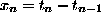 is treated as if it were an ordinary time series. We must keep in mind, however, that the index n is not proportional to time any more. It depends on the nature of the process if it is more reasonable to look for correlations in time or in event number. Since in the latter case we can use the standard machinery of regularly sampled time series, let us concentrate on the more difficult real time correlations.
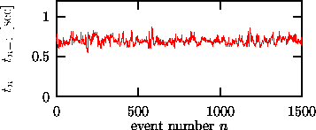
Figure: Heart rate fluctuations seen by plotting the time interval between consecutive heart beats (R waves) versus the beat number. Note that the spread of values is rather small due to the near-periodicity of the heart beat.
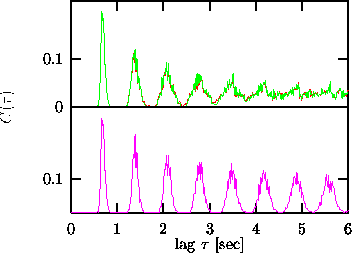
Figure: Binned autocorrelation function of an RR interval time series. Upper panel:and 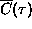 are practically indistinguishable. Lower: Autocorrelation for a random scramble of the data. Note that most of the periodicity is given by the fact that the duration of each beat had rather little variation during this recording.
In particular the literature on heart rate variability (HRV) contains
interesting material on the question of spectral estimation and linear modeling
of spike trains, here usually inter-beat (RR) interval series, see
e.g. Ref. [51]. For the heart beat interval sequence shown in
Fig. 16, spectral analysis of 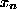 versus n may reveal
interesting structure, but even the mean periodicity of the heart beat would be
lost and serious aliasing effects would have to be faced. A very convenient
and powerful approach that uses the real time t rather than the event number
n is to write a spike train as a sum of Dirac delta functions located at the
spike instances:
With  , the
periodogram spectral estimator is then simply obtained by squaring the
(continuous) Fourier transform of s(t):
, the
periodogram spectral estimator is then simply obtained by squaring the
(continuous) Fourier transform of s(t):
Other spectral estimators can be derived by smoothing 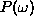 or by data
windowing. It is possible to generate surrogate spike trains that realise the
spectral estimator Eq.(28), although this is computationally very
cumbersome. Again, we can take advantage of the relative computational ease of
binned autocorrelations here. Introducing a normalisation constant
Introducing a normalisation constant  , we can write 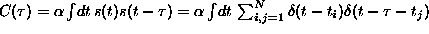. Then again, the binned autocorrelation
function is defined by
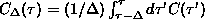. Now we
carry out both integrals and thus eliminate both delta functions. If we choose
, we can write 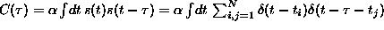. Then again, the binned autocorrelation
function is defined by
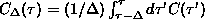. Now we
carry out both integrals and thus eliminate both delta functions. If we choose
 such that C(0)=1, we obtain:
such that C(0)=1, we obtain:
Thus, all we have to do is to count all possible intervals 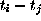 in a bin.
The upper panel in Fig. 17 shows the binned autocorrelation function
with bin size 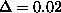 sec up to a lag of 6 sec for the heart beat data
shown in Fig. 16. Superimposed is the corresponding curve for a
surrogate that has been generated with the deviation from the binned
autocorrelations of the data as a cost function. The two curves are
practically indistinguishable. In this particular case, most of the structure
is given by the mean periodicity of the data. The lower trace of the same
figure shows that even a random scramble shows very similar (but not identical)
correlations. Information about the main periodicity is already contained in
the distribution of inter-beat intervals which is preserved under permutation.
As with unevenly sampled data, the choice of binning and the maximal lag are somewhat delicate and not that much practical experience exists. It is certainly again recommendable to avoid empty bins. The possibility to limit the temporal range of 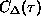 is a powerful instrument to keep computation time within reasonable limits.